Contenido
1. Introducción a Prolog
Prolog es un lenguaje de programación declarativo que se utiliza para resolver problemas en los que existen objetos y las relaciones entre ellos. Los lenguajes declarativos se diferencian de los lenguajes imperativos en que están basados en formalismos abstractos (Prolog tiene sus fundamentos en la lógica de predicados o de primer orden), por lo tanto su semántica no depende de la máquina en la que se ejecutan. Busca obtener conocimiento declarando hechos sobre los objetos y sus relaciones, creando reglas sobre dichos objetos y relaciones y realizando preguntas en ese dominio. Está basado en los siguientes mecanismos básicos: unificación, estructuras de datos basadas en árboles y backtracking.

Antes de comenzar el tutorial es importante hacer una recomendación. Prolog es diferente a cualquier otro lenguaje de bajo o alto nivel, por tanto, no es recomendable intentar resolver un problema en otro lenguaje para luego traducirlo a Prolog. No hay que buscar un algoritmo que resuelva el problema, sólo es necesario dar las bases para que Prolog lo resuelva.

1.1 Historia
Prolog fue creado en los años 80 en la Universidad de Provenza por Alain Colmerauer y Philippe Roussel. Su nombre se deriva del francés programmation en logique. Fue diseñado para el procesamiento de lenguaje natural y el razonamiento lógico.
Está basado en la interpretación por procedimientos de Robert Kowalski de las cláusulas de Horn. Su desarrollo fue motivado en parte por la idea de reconciliar el uso de la lógica como lenguaje de representación del conocimiento declarativo con la representación procesal del conocimiento que fue popular en los principios de los 70s. La primera implementación de Prolog fue un intérprete escrito en Fortran por Gerard Battani y Henri Meloni.
Prolog fue preferido por los investigadores de inteligencia artificial europeos, mientras que, los investigadores de IA estadounidenses preferían usar el lenguaje de programación Lisp, lo cual abriría un debate que continúa vigente acerca de cuál de los dos lenguajes es mejor en este campo.
Una gran parte del desarrollo moderno en Lisp viene del ímpetu dado por el proyecto para hacer la quinta generación de computadoras cuyo objetivo era el desarrollo de una nueva clase de computadoras que utilizarían técnicas y tecnologías de inteligencia artificial tanto en el plano del hardware como del software y que serían capaces de hacer actividades como la traducción automática entre lenguas naturales.
2. Sintaxis
2.1 Términos
Los términos son el único elemento del lenguaje, un término se compone de un functor seguido de cero a N argumentos entre paréntesis y separados por comas.
En Lógica de primer orden, los términos se clasifican en tres categorías: constantes, variables y términos compuestos:
-
Constantes: En Prolog se distinguen dos tipos de constantes:
-
Números: Este tipo de constantes se utiliza para representar números enteros y números reales, para poder realizar operaciones aritméticas entre ellos. Los números enteros se expresan con la notación decimal habitual, ejemplo (0,1,-2124,332,etc). Los números reales se pueden representar con la notación decimal (ejemplo 1.34, -0.345, etc) o también en notación exponencial (por ejemplo 4.3E6, -0.1e+3, 12.03e-2).
-
Atomos o functores: Se utilizan para nombrar objetos, propiedades o relaciones. Deben empezar en minúscula (ejemplo luis, pedro, gato, edad, :-, ?-).
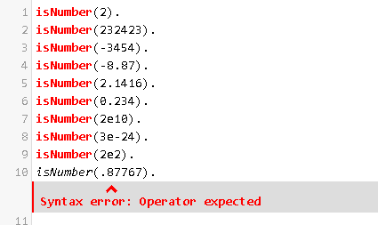
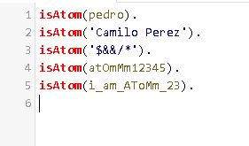
-
Variables: Las variables en Prolog se representan mediante cadenas formadas por letras, dígitos y el símbolo de subrayado,también con una letra mayúscula en su inicio, una excepción es la variable anónima ‘_’. (ejemplo X, Y, Resultado, _nombre, _).
Estructuras: Son términos compuestos por otros términos. Se construyen mediante un símbolo de función, denominado functor que se define con un átomo, seguido entre paréntesis, por una conjunto de términos separados por comas, denominados argumentos (Ejemplos: fecha(10,mayo,2011), punto(X,Y), recta(punto(11,21), punto(31,25))). OJO!: Al escribir una estructura, no puede haber ningún espacio entre el functor y el paréntesis abierto antes de los argumentos. Por ejemplo, punto (X,Y) no es una estructura compuesta correcta y generará un error de compilación.

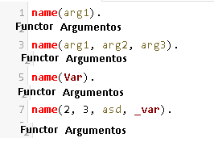
2.2 Programa
Los programas en Prolog son programas lógicos definidos, este se basa en un conocimiento base para solucionar consultas así como inferir información y el conocimiento lo representamos mediante cláusulas de Horn positivas. Las cláusulas son hechos o reglas , están compuestas usualmente de predicados.
La mayoría de los programas Prolog están organizados en cuatro secciones principales:
- Dominio: donde se declaran los argumentos que utilizarán los predicados.
- Predicados: donde se declaran todos los predicados no predefinidos que se utilizarán en las siguientes secciones.
- Objetivos: esta sección permite ejecutar los programas de forma no interactiva, y por tanto, buscará la solución deseada tan pronto como se ejecute el programa. Como también es habitual usar Prolog de forma interactiva es frecuente ejecutar un programa y luego esperar a que se nos pregunte por los objetivos.
- Clausulas: donde se escriben los hechos y las reglas que conocemos del dominio.
Para el desarrollo de este tutorial usaremos la herramienta online de Prolog. swi Prolog

Para el caso que se quiera poder trabajar desde la propia máquina se debe realizar los siguiente:
- Windows:Se usa el IDE Swi-Prolog, es el mismo que podemos encontrar online, pero en este caso podemos tenerlo en la máquina local y poder trabajar desde ahí. Enlace de descarga
- Linux: Para poder instalarlo debemos seguir los pasos que encontraremos en el siguiente link enlace, los comandos que se encontraran allí se deben ejecutar por consola. En este caso no hay un IDE que nos permita correr el codigo con un solo botón, si queremos ejecutar código prolog, debemos primero escribir el código con un editor de texto y guardar los archivos con extensión “.pl” . Luego de esto por medio de la consola accedemos a la carpeta donde se encuentran guardados los archivos y estando allí ejecutamos el comando “prolog”, esto nos permitirá acceder a la consola de prolog previamente instalada. Ahora para poder ejecutar un programa, debemos poner en consola “ [ “nombre_archivo.pl” ]. “ , luego ya podemos usar las “reglas” que se hayan programado.
3. Hechos
Un hecho es una relación entre objetos. Son el tipo de sentencia más sencillo de Prolog y declaran los valores que son verdaderos para un predicado. No tienen que reflejar el mundo real necesariamente, pero será única y exclusivamente lo que Prolog tomará como verdadero. Están conformados por un predicado y un argumento u objetos como se puede observar en la siguiente imagen.


Los hechos pueden construir propiedades o relaciones. Cuando están compuestos por un único argumento (monádicos), se dice que es una propiedad. Cuando se forman con dos o más argumentos (poliádicos), construyen relaciones. Existe una serie de reglas que se deben tener presentes al momento de definir un predicado.
- Los nombres de los hechos (predicado) deben iniciar con minúscula.
- Los argumentos se escriben separados por comas, en minúscula y encerrados entre paréntesis.
- Todos los hechos deben terminar en punto.
Un ejemplo de un hecho es:
persona(juan,27).
Ejemplo práctico
Para entender un poco mejor la función de los hechos en Prolog,iniciaremos con un primer ejemplo. Observe el siguiente árbol genealógico.

Podemos observar que el tipo de hechos que se presentan en la imagen son relaciones. Tenemos la relación entre dos personas, esta relación podremos llamarla progenitor. Por tanto los hechos que describen el árbol de la imagen quedan definidos como:
progenitor(clara,jose). %Hecho 1
progenitor(tomas, jose). %Hecho 2
progenitor(tomas,isabel). %Hecho 3
progenitor(jose, ana). %Hecho 4
progenitor(jose, patricia). %Hecho 5
progenitor(patricia,jaime). %Hecho 6
Otro ejemplo de familias


Reglas para poder hallar relación familiar.
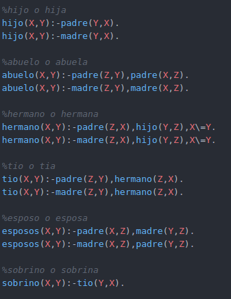

4. Consultas
Sobre un conjunto de hechos se pueden definir realizar una serie de preguntas para extraer conocimiento de la base de datos generada por los hechos. Comienzan con un signo de interrogación seguido de un guión ?- y terminan en punto. Ante una consulta, Prolog intenta hacer un matching sobre la base de conocimiento.
Cuando en una consulta se tiene más de una alternativa Prolog devuelve la primera ocurrencia, se obtienen las demás insertando el token punto y coma. Las respuestas a una consulta puede ser true, false o los elementos que pueden tomar una variable definida. Un ejemplo simple de una consulta puede ser:
?-progenitor(patricia,jaime).

Se puede observar que la respuesta a la pregunta fue true, ya que la consulta pudo ser unificada con el Hecho 6 de la base de conocimiento.
Variables
Para realizar consultas más interesantes se puede hacer el uso de variables. Es importante recordar que las variables deben iniciar con letra mayúscula o con el carácter (_). Existe una variable especial, la variable anónima o blanca. Esta variable se utiliza de la misma manera que las demás variables pero nunca toma ningún valor.
4.1 Conjunciones de objetivos
Se usan para resolver preguntas complejas que requieren varios hechos. Están compuestas por dos o más objetivos separados por una coma y finalizan en punto.

Ejemplo práctico
Siguiendo con el ejemplo del árbol genealógico definido anteriormente, vamos a responder las siguientes preguntas:
-
a). ¿Qué arroja la siguiente consulta?:
?-progenitor(jaime,X).
Como se puede observar la respuesta es false ya que no existe en la base de conocimiento un hecho para el cual jaime sea progenitor de alguien. Esto se puede verificar en el árbol genealógico.
-
b). ¿Qué arroja la siguiente consulta?:
?-progenitor(X,jaime).
Esta consulta arroja todos los progenitores de jaime. Según el árbol genealógico de la figura y los hechos definidos para el árbol, la única progenitora de jaime es patricia.
-
c). ¿Qué arroja la siguiente consulta?:
?-progenitor(tomas,X), progenitor(X,Y),progenitor(Y,Z).
Arroja la información de los bisnietos de tomas, con su respectivos padres y abuelos. En este caso sólo tenemos una opción para X,Y,Z ya que sólo existe un bisnieto para tomas que es jaime.
-
d). Defina una consulta que permita determinar si clara es bisabuela de jaime. Teniendo en cuenta la consulta del punto c). podemos usarlo como referencia. Necesitamos construir un árbol con 3 niveles de profundidad,uno para la relación de bisabuelo y abuelo, otro para la relación de abuelo y padre y finalmente el nivel de la relación de padre e hijo. Sabemos que la bisabuela es clara y el bisnieto es jaime, por tanto existen dos variables que no conocemos: el abuelo y el padre. Podemos definir X= abuelo, Y= padre. La consulta quedaría como se muestra a continuación.

Si clara no fuera bisabuela de jaime, la consulta arrojaría false, pero Prolog logró unificar la consulta con dos hechos:
?-progenitor(tomas,jose),?-progenitor(jose,patricia).y?-progenitor(patricia,jaime).Por lo tanto X= jose y Y= patricia.
5. Reglas
Cuando la verdad de un hecho depende de la verdad de otro hecho o de un grupo de hechos se usa una regla. Declaran las condiciones para que un predicado sea cierto, con una implicación que pueden relacionar hechos para dar los valores de verdad a un predicado (la cabeza se cumple si el cuerpo se cumple). Funcionan como las fórmulas condicionales habituales en lógica. Una regla está compuesta por una cabeza y una cuerpo. El cuerpo puede estar formado por varios hechos y objetivos. Su sintaxis general es:
cabeza :- objetivo1, objetivo2, ..., objetivon.
Formalmente, desde un punto de vista lógico, se interpretaría de la siguiente forma:
objetivo1 ∧ ⋯ ∧ objetivon → cabeza
Los objetivos van separados por comas, especificando conjunción y al final debe de ir un punto. Por ejemplo:
animal_carnívoro( X ):- animal( X ), carnívoro( X ).
Existen dos tipos de reglas:
-
Conjunciones

-
Disyunciones

5.1 Reglas recursivas
Con la definición del tipo de reglas simple se pueden resolver diferentes problemas, sin embargo, la gran potencia de Prolog está en la definición de reglas recursivas. Siguiendo con el ejemplo del árbol genealógico,se puede definir relaciones para el abuelo, bisabuelo, tatarabuelo, etc. Podría ser interesante definir la relación predecesor(X,Y). Un predecesor de X podrá ser el progenitor de X. También será predecesor si es abuelo/a, si es tatarabuelo/a, etc., es decir, podríamos definir un conjunto de reglas como:
predecesor(X,Y):-progenitor(X,Y). %padre
predecesor(X,Y):-progenitor(X,Z), progenitor(Z,Y). %abuelo
predecesor(X,Y):-progenitor(X,Z), progenitor(Z,V), progenitor(V,Y). %bisabuelo
Resulta engorroso tener que definir una nueva regla para cada vínculo con un predecesor, ¿qué pasaría si queremos conocer a un predecesor 10 niveles atrás en el árbol genealógico?, ¿necesitaremos definir 10 reglas diferentes?. No. Podemos hacer uso de las reglas recursivas.
Para hacer uso de reglas recursivas se debe considerar 2 casos:
- Caso básico: Define cuándo se detiene el cálculo.
- Caso recursivo: Suponiendo que ya se ha solucionado un caso más simple, define cómo descomponer el caso actual hasta llegar al caso básico.
Reescribiendo la relación predecesor de forma recursiva quedaría:
predecesor(X,Y):-progenitor(X,Y). %caso base
predecesor(X,Y):-progenitor(X,Z), predecesor(Z,Y). %caso recursivo
Ejemplo práctico.
Siguiendo con el árbol genealógico que hemos venido trabajando, resolver:
- a). Defina las reglas y consultas para encontrar a la madre y el padre de un elemento o todos los elementos del árbol.
Los padres son progenitores, lo único que cambia entre el padre y la madre es el sexo. Por eso es necesario definir nuevos hechos para representar el sexo de cada persona en el árbol.
Con la siguiente consulta podemos consultar quién es madre de quién. X= madre, Y=hijo.
Las filas de la tabla de resultados son las relaciones que se forman según el árbol.
- clara es madre de jose
- patricia es madre de jaime
De la misma forma podemos consultar los padres y sus hijos en el árbol.
Como se puede observar en la tabla anterior, se obtie el resultado de todas las parejas que se pueden formar entre padres e hijos según el árbol genealógico.
- tomas es padre de jose
- tomás es padre de isabel
- jose es padre de ana
jose es padre de patricia
-
b). Defina las reglas y consultas para encontrar un abuelo. Sabemos que un abuelo tiene dos niveles de relación con un nieto:
progenitor(Abuelo,Padre).yprogenitor(Padre,Nieto).Por tanto podemos definir la siguiente relación:
-
c). Defina las reglas y consultas para encontrar los antepasados usando reglas recursivas. Para determinar un antepasado de forma recursiva necesitamos dos casos: El caso base y el caso recursivo. Por tanto la regla queda definida de la siguiente forma:

6. Backtracking
Prolog siempre está consultando “la base del conocimiento”, para verificar que hechos son verdaderos y que nos permitirá la construcción de las posibles reglas. Para aquello en problemas de recursión, prolog se devuelve hasta que encuentra que un hecho base es verdadero y de ahí construye la respuesta.
En el siguiente ejemplo podemos ver que si consultamos K(Y), donde Y puede ser “a” o “b”. En este caso prolog va ir a lo más profundo del árbol en busca de los “hechos” , para ver como establecimos la base del conocimiento. Así se puede ver que h(a), da error dado a que no se encuentra en los hechos y en cambio retorna h(b) hasta K(Y) y por último Y tomaría el valor de “b”.

Ejemplo práctico de cómo hallar el factorial de un número .
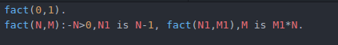
Ejemplo práctico - fibonacci .
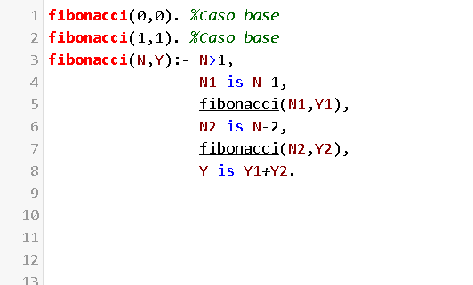
Considerando el siguiente ejemplo, vamos a entender cómo hace Prolog para verificar cuándo se cumple una regla.

Prolog intenta satisfacer los objetivos de la consulta de izquierda a derecha y para cada uno va probando las cláusulas correspondientes.
Primer intento
Prolog trabaja analizando los objetivos de izquierda a derecha los objetivos de la regla. Y verificando los hechos de arriba hacia abajo.
El primer objetivo que intentará analizar es sevende(Y).

Como el orden en que se definan los hechos importa, el primer hecho que encuentra en la base de conocimiento es sevende(vestido). Así que la variable Y queda instanciada como vestido.

Ahora debe verificar para cuales hechos se cumple que gusta(X,vestido).

Como se puede observar en la imagen, la X queda instanciada como maria porque es el primer hecho para el cual se cumple el objetivo.

Finalmente debe verificar el último objetivo bueno(vestido).. Este objetivo no está definido en la base de conocimiento por tanto este camino en el árbol se rechaza porque ha seleccionado una cláusula que no conduce a la solución. Por esta razón es necesario aplicar un retroceso backtracking.
Segundo intento
Prolog se devuelve hasta el punto donde instanció Y= vestido. Y busca el siguiente hecho que pueda unificar con sevende(X). obteniendo como resultado X= sombrero. Se repiten los demás pasos, llegando finalmente al hecho sevende(sombrero). como una verdad, por tanto el camino se acepta obteniendo una posibilidad a la regla con Y= sombrero y X= maria.

7. Expresiones
7.1 Construcción de expresiones aritméticas
Prolog tiene predefinidos los operadores aritméticos más habituales, mediante los que se pueden formar expresiones aritméticas. A continuación se enumeran algunos de los más importantes:
| Expresión | Operación |
|---|---|
| X+Y | suma de X e Y |
| X-Y | X menos Y |
| X*Y | producto de X por Y |
| X/Y | cociente real de la división de X por Y |
| X//Y | cociente entero de la división de X por Y |
| X^Y | potencia entera de X a la Y |
| X**Y | potencia real de X a la Y |
| X mod Y | resto de la división entera de X por Y |
| abs(X) | valor absoluto de X |
| acos(X) | arco coseno de X |
| asen(X) | arco seno de X |
| atan(X) | arco tangente de X |
| cos(X) | coseno de X |
| exp(X) | exponencial de X; [eX] |
| ln(X) | logaritmo neperiano de X |
| log(X) | logaritmo en base 2 de X |
| sin(X) | seno de X |
| sqrt(X) | raíz cuadrada de X |
| tan(X) | tangente de X |
| round(X,N) | redondeo del real X con N decimales |
Es importante tener en cuenta que los operadores anteriores sólo permiten construir expresiones aritméticas, pero estas son estructuras (términos compuestos) que no representan ningún valor. Por ejemplo, la expresión 13+5 no es otra cosa que el término compuesto +(3,5) escrito en notación infija. No se pueden realizar consultas del estilo “ ?- 13+5.”, porque “+” no es un predicado. ¿Qué pasa si hacemos la consulta “ ?- 13+5 = 8.”?

Como se puede observar a pesar de que al realizar la operación 13+5 obtenemos como resultado 18, para Prolog esto es falso dado que el término compuesto +(3,5) no es unificable con el término constante 8. Para poder evaluar expresiones aritméticas en Prolog hay que utilizar los predicados aritméticos que se describen a continuación.
7.2 Comparación de términos
Los siguientes operadores son los que permiten comparar términos en Prolog.
| Expresión | Operación |
|---|---|
| X<Y | cierto si el valor numérico de X es menor que el de Y |
| X>Y | cierto si el valor numérico de X es mayor que el de Y |
| X=<Y | cierto si el valor numérico de X es menor o igual que el de Y |
| X>=Y | cierto si el valor numérico de X es mayor o igual que el de Y |
7.3 Comparación de expresiones
Los siguientes predicados predefinidos comparan expresiones sin evaluarlas, mediante una comparación sintáctica siguiendo el siguiente orden:
- variables,
- enteros y reales,
- átomos en orden alfabético,
- términos complejos: aridad, nombre y orden según la definición recursiva.
| Expresión | Operación |
|---|---|
| X==Y | la expresión X es igual que la expresión Y |
| X\==Y | la expresión X es distinta que la expresión Y |
| X@<Y | la expresión X es menor que la expresión Y |
| X@>Y | la expresión X es mayor que la expresión Y |
| X@=<Y | la expresión X es menor o igual que la expresión Y |
| X@>=Y | la expresión X es mayor o igual que la expresión Y |
| X is Y | Si Y es una expresión aritmética, ésta se evalúa y el resultado se intenta unificar con X. |
Ejemplo:

Cuando se quiere comparar expresiones(ej:predicados, términos complejos) se añade un @ inmediatamente después de la primera expresión (X @< Y)

Algunos ejemplos del uso de expresiones:

Los siguientes predicados predefinidos comparan términos haciendo una evaluación de expresiones:
| Expresión | Operación |
|---|---|
| X =:= Y | cierto si los valores numéricos de X e Y son iguales |
| X =\= Y | cierto si los valores numéricos de X e Y son distintos |
7.4 Diferencia entre comparación de términos y comparación de expresiones
En Prolog, los operadores de comparación de expresiones y de términos también son llamados comparadores sintácticos y semánticos respectivamente, estos son conceptos fundamentales que se utilizan para comparar y relacionar términos y estructuras de datos en este lenguaje de programación lógica. Estos operadores desempeñan un papel crucial en la formulación de reglas lógicas y consultas, lo que permite a los programadores expresar y resolver problemas de manera declarativa. A continuación, profundizaremos en la diferencia entre los operadores sintácticos y semánticos, y cómo influyen en la programación en Prolog.
Operadores Semánticos
Por otro lado, los operadores semánticos se enfocan en la comparación de términos y estructuras de datos en función de su significado o contenido. La igualdad semántica implica que dos términos o estructuras son iguales si representan la misma entidad o valor, independientemente de cómo se expresan en el código fuente.
Operadores Sintácticos
Los operadores sintácticos se centran en la comparación de términos y estructuras de datos en función de su representación literal en el código fuente. La igualdad sintáctica implica que dos términos o estructuras deben ser idénticos en su forma, notación y estructura para considerarse iguales.
Diferencias Clave
Representación vs. Significado
La principal diferencia entre los operadores sintácticos y semánticos radica en si se comparan los términos en función de su representación literal (sintaxis) o su significado (semántica).
Flexibilidad Semántica
Los operadores semánticos son más flexibles en términos de cómo se pueden expresar los términos. Dos términos que representan la misma entidad, pero se han escrito de manera diferente, son iguales desde una perspectiva semántica.
Evaluación de Igualdad
La igualdad sintáctica requiere que los términos sean idénticos en su forma literal, mientras que la igualdad semántica se basa en si representan la misma entidad o valor.
8. Predicados predefinidos
Los predicados predefinidos son aquellos que ya están definidos en PROLOG, es decir, no necesitamos especificarlos mediante cláusulas. Existen dos tipos de predicados predefinidos:
- Aquellos predicados de uso frecuente que ya los proporciona PROLOG, aunque podríamos definirlos nosotros.
- Predicados con un efecto colateral distinto a la instanciación de variables a valores (funcionamiento normal del PROLOG).
Este conjunto de predicados permiten determinar el tipo de términos que estamos usando.
| Predicado | Función |
|---|---|
| var | El objetivo var(X) se cumple si X es una variable no instanciada. |
| nonvar | El objetivo nonvar(X) se cumple si X es una variable instanciada |
| atom | El objetivo atom(X) se cumple si X representa un átomo. |
| integer | El objetivo integer(X) se cumple si X representa un número entero. |
| atomic | El objetivo atomic(X) se cumple si X representa un entero o un átomo. |
Los siguientes son predicados predefinidos que permiten controlar otros predicados.
| Predicado | Función |
|---|---|
| !(cut) | Fuerza al sistema a mantener ciertas elecciones que ha realizado. |
| true | Este objetivo siempre se cumple. |
| fail | Este objetivo siempre fracasa. |
| not | El objetivo not(X) se cumple si fracasa el intento de satisfacer X. El objetivo not(X) fracasa si el intento de satisfacer X tiene éxito. Es similar a la negación en la lógica de predicados. |
| repeat | forma auxiliar para generar soluciones múltiples mediante el mecanismo de reevaluación. |
| call | Se cumple si tiene éxito el intento de satisfacer X. |
| ; | Especifica una disyunción de objetivos |
| , | Especifica una conjunción de objetivos |
Predicados de lectura y escritura
| Predicado | Función |
|---|---|
| write | escribe el término X en la consola de salida. |
| nl | genera una nueva línea en la consola de salida. |
| read | lee el siguiente término en la consola de entrada. |
| display | funciona exactamente igual que write, excepto que pasa por alto las declaraciones de operadores. |
Predicados para modificacion de la base de conocimiento.
Los hechos de la base de conocimiento que se deseen cambiar, deben ser marcados como dinámicos antes de usarse.
| Predicado | Función |
|---|---|
| assertz | Inserta un hecho al final de la lista de hechos de un predicado. |
| asserta | Inserta un hecho al inicio de la lista de hechos de un predicado. |
| retract | Remueve un hecho de la base de conocimiento. |
| retractall | Remueve todos los hechos que coincidan con el argumento recibido. |
Algunos ejemplos:
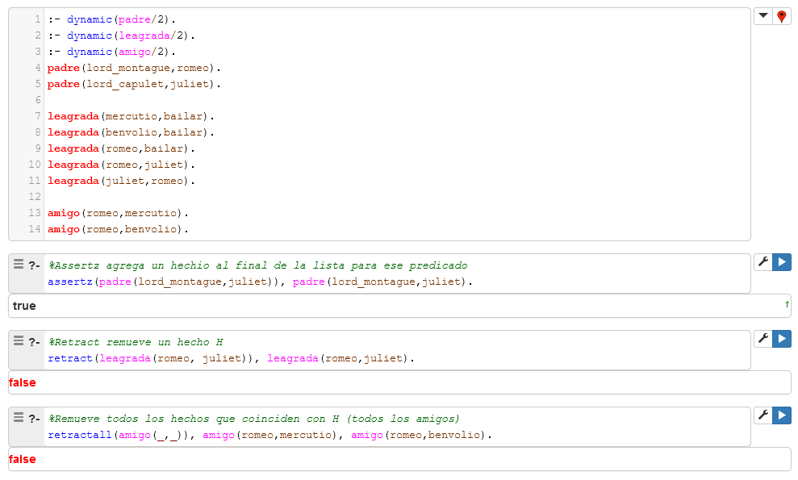
9. Listas
Una lista es una tipo concreto de estructura de datos simple. Es una secuencia ordenada de elementos que puede tener cualquier longitud. Un elemento puede ser cualquier tipo de dato e incluso otra lista. En Prolog las listas están formadas por cabeza y cola. Se representan como una serie de elementos separados por comas y encerrados entre corchetes. Por ejemplo en la lista:
 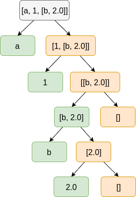
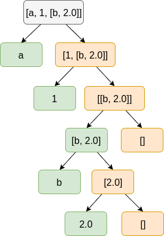
Notación de predicado para listas Notación de corchetes cuadrados.
[a, b, c, d]
Se tiene que a es la cabeza de la lista y [b, c, d] la cola.
| Lista | Cabeza | Cola |
|---|---|---|
| [a,b,c,d] | a | [b,c,d] |
| [a] | a | [] |
| [] | no tiene | no tiene |
| [[a,b],c] | [a,b] | [c] |
| [a,[b,c]] | a | [[b,c]] |
| [a,b,[c,d]] | a | [b,[c,d]] |
Una lista cuya cabeza es A y la cola es B, en prolog se denota como:
[A | B]
9.1 Unificación y listas
En Prolog se puede unificar una lista con otra.
[X,Y,Z]= [a,b,c]
X = a
Y = b
Z = c
Una variable que no está instanciada se puede unificar con cualquier objeto, por tanto se puede unificar una lista con una variable.
X= [a,b,c]
Para unificar una variable con una lista pero separando su cabeza y cola se debe hacer de la forma [A | B] donde el símbolo (|) separará la cabeza de la cola. Ejemplo:
[a,b,c] = [Cabeza|Cola]
Cabeza = a
Cola = [b,c]
[a,b,c] = [X,Y|Z]
X = a
Y = b
Z = [c]
[a,b,c] = [X,Y,Z|Cola]
X = a
Y = b
Z = c
Cola = [ ]
9.2 Listas y recursión
En Prolog existen tres criterios de terminación importantes:
-
Cuando la lista es vacía. El esquema general es:
/* Regla de terminacion */ predicado([ ]):- procesar([ ]). /* Regla recursiva */ predicado([Cabeza | Cola]):- procesar(Cabeza), predicado(Cola). -
Cuando un elemento es encontrado. El esquema general es:
/* Regla de terminación */ predicado(Cabeza, [Cabeza | Cola]):- procesar algo. /* Regla recursiva */ predicado(X, [Cabeza | Cola]):- procesar algo, predicado(X, Cola). -
Cuando una posición es encontrada. El esquema general es:
/* Regla de terminacion */ predicado(1,Cabeza, [Cabeza | Cola]):- procesar algo. /* Regla recursiva */ predicado(P, X, [ | L]):- P1=P-1, predicado(P1,X, L).
Ejemplos prácticos:
a). Encontrar el último elemento de una lista.

b). Encontrar el k-ésimo elemento de una lista.

c). Calcular la longitud de la lista.

d). Verifica si una lista es palíndroma o no.

e). Crear una lista que contenga los enteros de un rango dado.

f). Sumar los elementos de una lista

g.)Reglas basicas aplicadas a las listas. 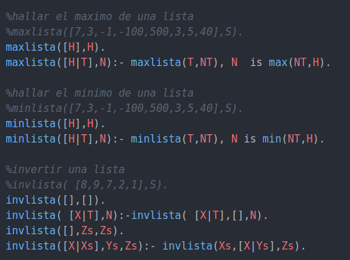
i.) Algoritmo para ordenar una lista usando Merge Sort. 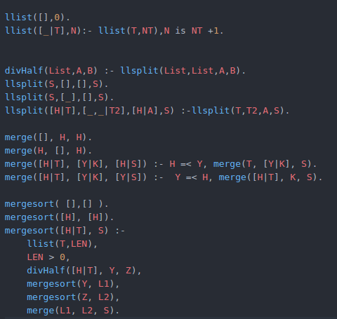
9.3 Funciones predefinidas
- Is_list: Determina si un término es lista
- Member: Esta función es muy útil para “iterar” sobre la lista así como revisar si un item pertence a la lista.
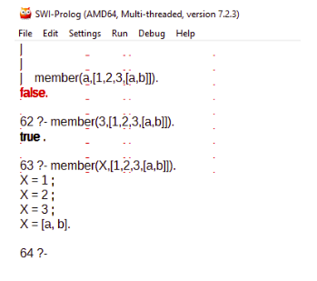
- Length: Permite obtener la longitud de una lista
- Append: Permite concatenar dos listas, obtener sublistas y generar todas las combinaciones de listas

- Sort: Permite ordenar una lista
10. Arboles
Un árbol binario es una estructura que contiene un nodo padre y dos nodos hijos; uno izquierdo y uno derecho. Se puede decir que un árbol es una estructura con una definición puramente recursiva, ya que se puede definir como el elemento raíz cuyos hijos son a su vez árboles.
Representación en Prolog de árboles
Como un árbol es una estructura recursiva, necesitaremos un caso base y un caso recursivo.
- X es un árbol vacío
-
X es un árbol con hijos
binary_tree(void). %caso base binary_tree(t(K,L,R)) :- %caso recursivo binary_tree(L), binary_tree(R).
Como se puede observar se necesitan 3 elementos para definir un árbol: la raíz, el subárbol izquierdo y el subárbol derecho. Veamos un ejemplo:

El árbol de la imagen en la relación t(K,L,R) queda definido como:
tree1(t(6, t(4, t(2, nil, nil), t(5, nil, nil)), t(9, t(7, nil, nil), nil))).
También podemos definir reglas para realizar los posibles recorridos en el árbol:
-
Inorder:
inorder(nil, []). inorder(t(K,L,R), List):-inorder(L,LL), inorder(R, LR), append(LL, [K|LR],List). -
Preorder:
preorder(nil, []). preorder(t(K,L,R), List):-preorder(L,LL), preorder(R, LR), append([K|LL], LR, List). -
Postorder:
postorder(nil, []). postorder(t(K,L,R), List):-postorder(L,LL), postorder(R, LR), append(LL, LR,R1), append(R1, [K], List).
Al realizar las pruebas con el árbol del ejemplo y los diferentes recorridos obtenemos como resultado:

10.1 Otra representación de arboles
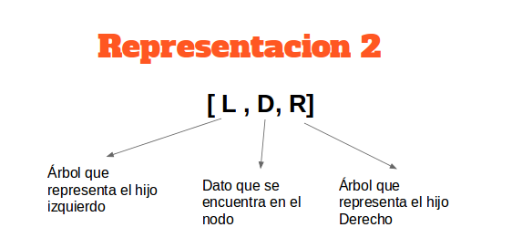

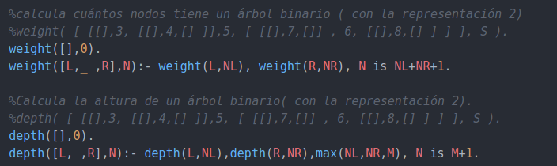
10.2 Árboles N-arios
Para definir un árbol n-ario, empleamos listas, en las cuales la cabeza será el nodo padre y todos los elementos de la cola serán el conjunto de nodos hijos.
Entonces, si tenemos:
mi_arbol_n_ario([7, [0.9], [15], [[42, ar]], [3.333]])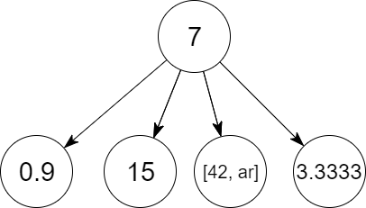
Para verificar que una estructura sí es lista
es_arbol_n_ario([]).
es_arbol_n_ario([_ | Hijos]) :- iterar_hijos(Hijos).
iterar_hijos([]).
iterar_hijos([Hijo | Lista]) :- es_arbol_n_ario(Hijo), iterar_hijos(Lista).preorder([], []).
preorder([Padre | Hijos], Lista) :- iterar_preorder(Hijos, L),
append([Padre], L, Lista).
iterar_preorder([], []).
iterar_preorder([Hijo | Lista], RecorridoHermanos) :- preorder(Hijo, Recorrido),
iterar_preorder(Lista, RecorridoHermano),
append(Recorrido, RecorridoHermano, RecorridoHermanos).mi_arbol_n_ario( [5, [8, [7, [9]], [10]], [11, [1]]]).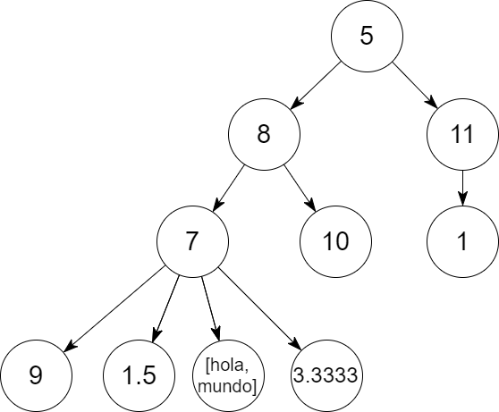
?- mi_arbol_n_ario(Arbol), es_arbol_n_ario(Arbol), preorder(Arbol, Recorrido).
Arbol = [5, [8, [7, [9]], [10]], [11, [1]]],
Recorrido = [5, 8, 7, 9, 1.5, [hola, mundo], 3.3333, 10, 11, 1]11. Ejemplos de Prolog
11.1 Ejemplos de Grafos
11.1.1 Representación mediante aristas
1. Implementar el siguiente grafo en Prolog y definir una regla para encontrar los caminos de un nodo.

Todas las uniones entre dos nodos pueden ser representadas como hechos de relaciones, por tanto quedaría definido como:

2. Para determinar todos los caminos entre un nodo A y un nodo B en un grafo dirigido como el presentado a continuación, usando la representacion mediante sus aristas, es decir, sea G:
Y su representación dada por:
Se sabe que un nodo A esta conectado con B si existe arista(A,B) o arista(B,A).
Los caminos están representados por la lista de nodos a través de los cuales se debe viajar para pasar del nodo A al nodo B, sin repetir nodos.
Luego, para encontrar los caminos de, por ejemplo, e a d se realiza:
Obteniendo los caminos de e a d:
11.1.2 Otras representaciones de grafos
Además de la representación a partir de aristas, se puede representar los grafos en Prolog de formas diferentes como:
- Forma grafo-término: Cada grafo es un objeto con dos tipos de conjuntos, nodos y aristas
- Forma lista de adyacencia: Consiste de una lista de nodos donde se asocia cada nodo a los adyacentes a este.
- Forma aristas y nodos: Lista que consiste de elementos de la forma X-Y donde X y Y son nodos y - representa una arista entre estos. Los nodos que no tienen aristas se representan como elementos solos.
Dependiendo del tipo de grafo (dirigido o no dirigido) la representación varía:
- Grafos no dirigidos:
- Grafos dirigidos:

Para el grafo no dirigido presentado, su representación sería:
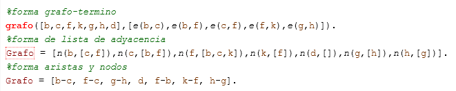

Para el grafo dirigido presentado, su representación sería:
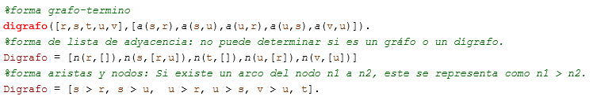
11.2 Ejemplo Autómatas
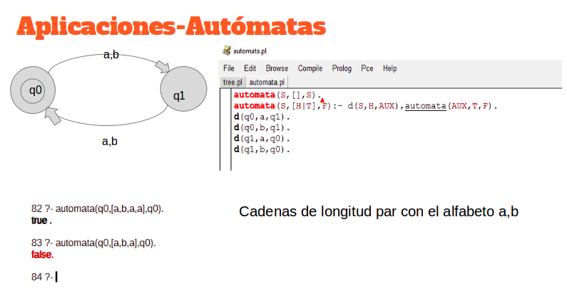
Implementar un AFD en prolog que acepte el lenguaje determinado por el siguiente autómata:

Un autómata puede verse como un grafo dirigido con un estado de inicio y otro de finalización. Podemos representar la unión entre estados como un hecho de relación y es importante hacer la definición del estado inicial y el estado final. El autómata quedaría definido como:

Vamos a verificar la anterior definición con una cadena que sí sea aceptada por el autómata. En este caso probaremos para la cadena [b,b,a,a,b,a,b], verificando que es una cadena aceptada.

Finalmente realizaremos la prueba con la cadena [b,b,a], la cual debería ser rechazada.

11.3 Ejemplo Sistema Experto
Implementar un Sistema Experto en prolog que acepte el ayude al diagnostico de un conjunto de enfermedades:
Un sistema experto se define como un sistema que proveen una solución a los problemas en rangos específicos de conocimiento tan cercanas como un humano experto lo pudiese hacer, en prolog se pueden implementar con ayuda de los hechos conocidos por un experto humano.
Vamos a ver cada parte del sistema y que funcion cumple:

La primera parte, la regla evaluar es la cual inicia el proceso, esta asu vez llama a hipotesis, para luego de evaluarla escribir en consola la solucion que considera correcta segun los datos que tiene disponibles

En la regla "hipotesis" se enumeran las enfermedades las cuales puede diagnosticar el sistema experto

Cada enfermedad tiene una regla la cual liga los sintomas con la respectiva enfermedad, ademas de mostar los respectivos medicamentos recomenaddos

Cada regla de enfermedad usa "verificar" para reconocer si se sabe si el usuario tiene o no un sintoma en especifico, el hecho "si(sintoma)" no se encuentra en la base de conocimiento del sistema entonces se hace el llamado a la regla "preguntar(sintoma)"

La regla auxiliar "preguntar" sirve para recibir los datos del usuario, esta hace uso de la regla assert que trae prolog por defecto para poder añadir nuevos hechos a la base de conocimiento del sistema
Un ejemplo de la salida del sistema experto:

11.4 Ejemplo de QuickSort
Quick sort es uno de los algoritmos de ordenamiento más usados, veremos como sería una de las implementaciones en Prolog.
Sabemos que en QuickSort se utiliza un elemento pivote el cual partirá la lista en dos (los menores del pivote y los mayores a él). Recordar que quicksort usa la estrategia de dividir y vencer. Por lo cual, QuickSort lo podemos ver como dividir dos listas, ordenar cada una de esas listas con QuickSort y posterior a ello, juntar cada lista ordenada.

Ahora debemos definir separar que es la parte más interesante del programa. separar (el predicado) recibirá un pivote, una lista, unos menores y unos mayores. En caso se que el elemento A sea menor que el pivote le haremos append a la lista de mayores [A|May], en caso contrario lo enviaremos como tercer parámetro para la lista de menores.

Nota: El caso base de separar es cuando las dos listas están vacías y no importa el pivote que nos llegue.
QuickSort más otros ejemplos lo podemos encontrar en este Notebook11.5 Ejemplo de un compresor
La compresión de datos se basa fundamentalmente en buscar repeticiones en series de datos para después almacenar solo el dato junto al número de veces que se repite. Así, por ejemplo, si en un fichero aparece una secuencia como "AAAAAA", ocupando 6 bytes se podría almacenar simplemente "6A" que ocupa solo 2 bytes.
Supongamos que se desea comprimir la siguiente cadena de números y se desea comprimir la secuencia de números contiguos, se puede hacer una compresión RLE
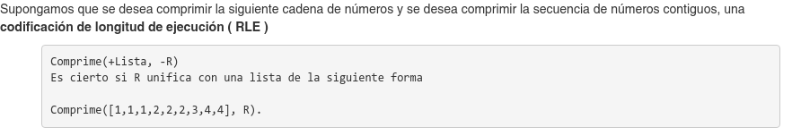
Para este caso toda la secuencia ingresada será agrupada por el número de repeticiones contiguas de sí misma.
Aplicando inducción matemática se llega a los siguientes casos
- Lista vacía.
- Un único elemento: Cuando tenga solo un elemento no contiguo con otro no se hará compresión, evitando así tener casos de este tipo (1,1).
- Cuando ambos elementos contiguos son iguales: cuando se cumple el caso se aplica recursión con uno menos del resto y se acumula.
- Cuando ambos elementos contiguos no son iguales: cuando se cumple el caso se retira el primero de la lista y se añade al resto.
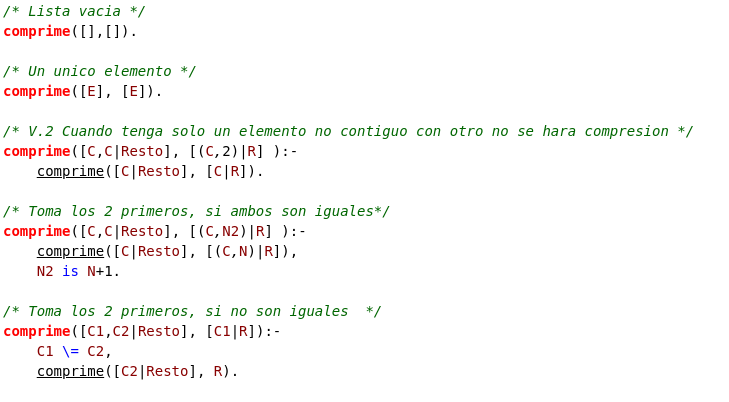
Al dar como input por ejemplo: comprime([1,1,1,2,2,2,3,4,4], R).
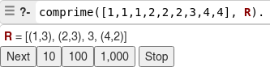
La codificación run-length realiza una compresión de datos sin pérdidas y es muy utilizado en imágenes de 8 bits indexadas (en un principio fue utilizado para imágenes en blanco y negro). No funciona tan bien en imágenes donde varía constantemente el color de los píxels como fotografías, aunque JPEG lo utiliza de forma efectiva en los coeficientes que quedan después de transformar y cuantificar bloques de imágenes.
Ejemplo compresión RLE -Notebook11.6 Ejemplo de DCG
Uno de las aplicaciones por las cuales fue originalmente concebido Prolog por su autor Alain Colmerauer fue el de procesamiento de lenguaje natural. Esto se logra en Prolog gracias al uso de Definitive Clauses Grammar o por sus siglas en inglés DCG
Pero antes de entender mediante un ejemplo básico cómo funciona el DCG en Prolog es necesario hacer una breve introducción a las gramaticas libres de contexto.
Donde la gramática libre de contexto es en esencia un conjunto de reglas que nos dicen si una "oración" está correctamente formulada (Es decir desde un punto de vista sintáctico). Un ejemplo de dicha gramática es $L=\left\lbracea^ib^jc^k | i+j=3k\right\rbrace$ como la que se muestra a continuación

La anterior gramática se refiere a palabras formadas por a,b,c de tal forma que se cumpla que $ L=\left\lbrace a^ib^jc^k | i+j=3k \right\rbrace $ . En esta gramática podemos identificar unas letras mayúsculas las cuales son los símbolos no terminales es decir que tienen producciones mientras que las letras minúsculas serán considerados como símbolos terminales de la gramática
Lo anterior mencionado puede ser generalizado a casos más grandes incluso en el área de procesamiento de lenguaje natural es decir hacer que un computador logre entender idiomas como lo son el español, inglés, alemán, entre otros...
Prolog facilita la labor de trabajar con gramáticas libre de contexto mediante el uso de los ya mencionados DCG, aunque tambien se puede realizar con la función append de listas.Nada mejor algo grafico para mostrar las facilidades que esta posee para representar la gramática por medio de DCG:

Como podemos observar las similitudes entre la forma que estamos acostumbrados y la forma como le hacemos entender mediante el uso de DCG la gramática con la queremos trabajar. Y la forma como se realizan consultas sobre si una estructura gramatical de una frase es correcta se realiza de la siguiente forma:

Ahora vamos a probar con la frase woman a man love a y nos daremos que el resultado es el esperado, es decir falso
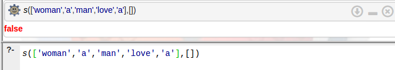
Sin embargo, podemos ahondar más en esta gramática que hace referencia al lenguaje inglés para añadir nuevas características. Comencemos por una simplificación básica que nos permitirá construir sobre ella más adelante:
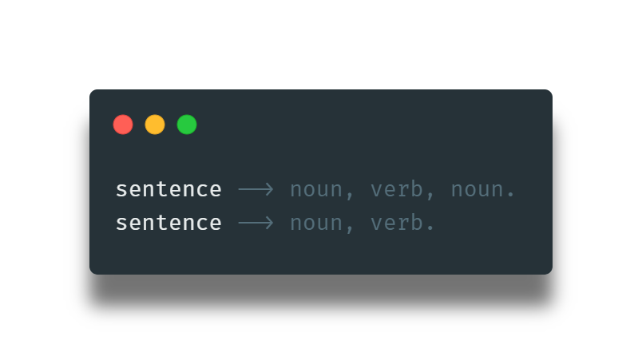
Esta gramática hace referencia al caso extremadamente estricto de oraciones simples en inglés de la forma: sustantivo, luego verbo, con la opcionalidad de tener de nuevo un sustantivo o no. Podemos mejorarla al añadir una frase sustantiva, que permita añadir un determinador opcional a la oración.
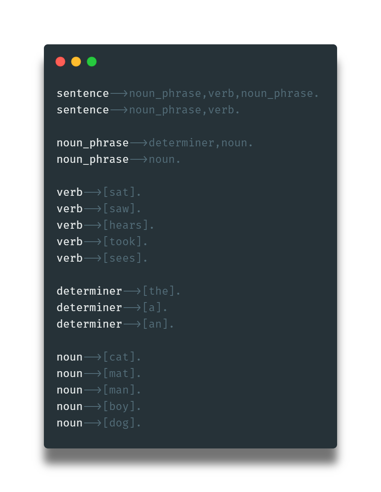
Aquí podemos notar varias cosas. sentence, noun_phrase y verb son conocidos como los términos sintácticos. Esto indica que hacen parte de la estructura del lenguaje inglés. Por otra parte la lista de paréntesis cuadrados son usados para indicar que son parte del vocabulario del lenguaje, y no hacen parte de la estructura del lenguaje; también conocidos como terminales.
Elaborando un poco más, podemos añadir verbos compuestos al añadir la regla verb-->[will_see].; además que podemos añadir el uso de adjetivos que nos permitirán crear oraciones más complejas.
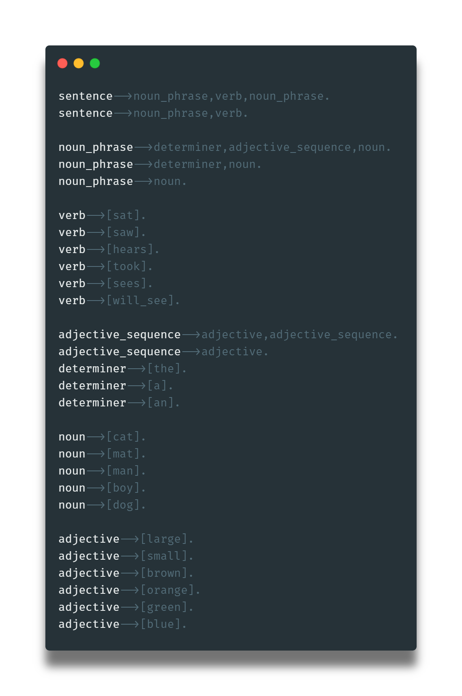
Esta última gramática no tiene en cuenta la pluralidad de los sustantivos en conjunción con sus verbos. Así que podemos implementar reglas particulares para sustantivos y verbos de tal manera que se asignen a sustantivos (plurales y singulares) sus verbos en forma correcta. Los primeros 4 verbos son etiquetados como ambos para indicar que tienen la misma forma tanto en plural como singular.
Y una vez hayamos añadido estos cambios, deberemos soportar esta pluralidad en la creación de oraciones y frases sustantivas.
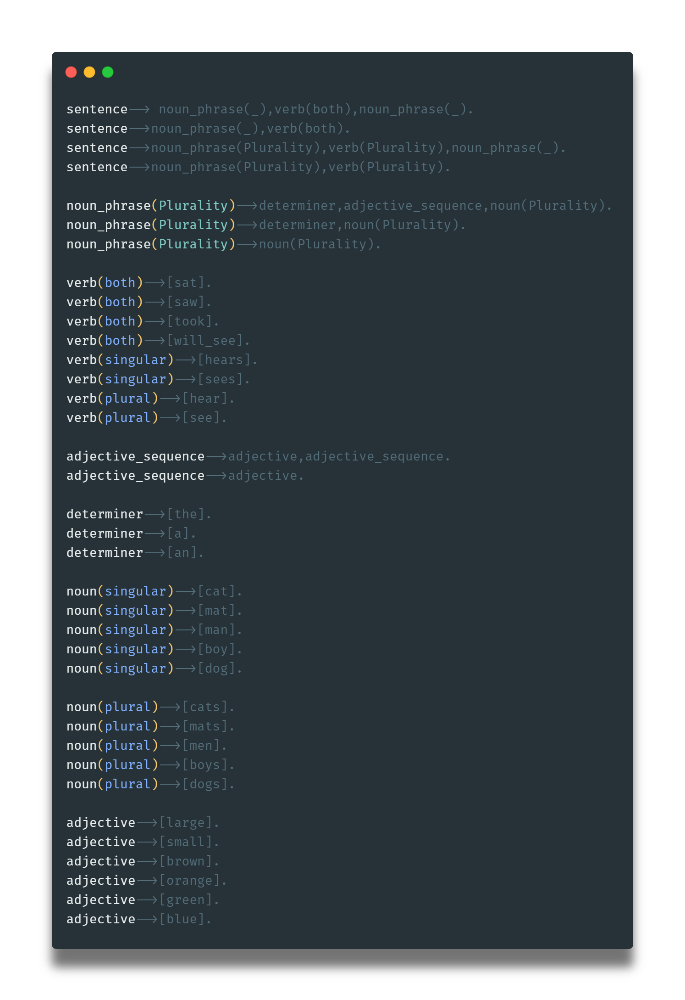
Ahora podemos hacer unas cuantas consultas para darle uso a este analizador de lenguaje natural.
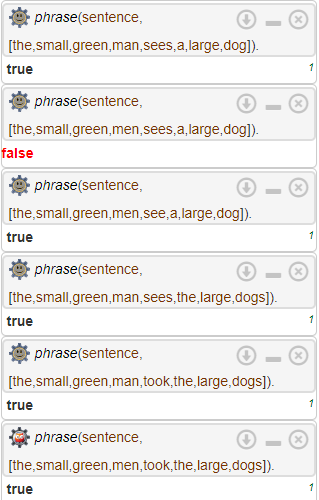
Esto nos permite un sinfín de cosas más como crear el árbol sintáctico correspondiente, entre otras que se dejan como tarea de revisión al lector.
11.7 Problema de Torres de Hanoi

El problema consiste en:
- Hay un stack de N discos están organizados del más grande al más pequeño, de abajo hacia arriba en una barilla.
- Hay otras dos varillas que no tienen discos, una es nuestro objetivo donde queremos pasar los discos de forma ordenada y la otra nos va a servir de auxiliar.
- Queremos el mínimo número de movimientos para mover el stack de la varilla inicial a la varilla objetivo.
En cuestión, se puede solucionar de manera recursiva, donde podemos definir tres casos.
El caso base, que es cuando en la varilla A hay un sólo elemento, por lo cual el disco se mueve directamente a C. Lo definimos de la siguiente manera en Prolog

Y el caso recusivo, es cuando N>1 en el cual podemos definir que primero pase N-1 discos de A a B, usando C, luego el disco que queda lo pasamos de A a C, y en última instancia se pasarían los discos que hay en B a C. Lo definimos en Prolog de la siguiente manera.

A continuación podemos ver la resolución del objetivo con tres discos.

Aquí encontrarás un tutorial completo de Prolog, que va desde sus estructuras más simples, hasta ejemplos avanzados como un sistema experto.
11.8 Ejemplo de Bubble Sort
En Prolog, para el algoritmo de Bubble Sort es necesario comparar los dos elementos de la lista restante en cada evaluación recursiva y hacer el intercambio de estos en una lista auxiliar, hasta obtener la lista ordenada. La implementación en Prolog se presenta a continuación:
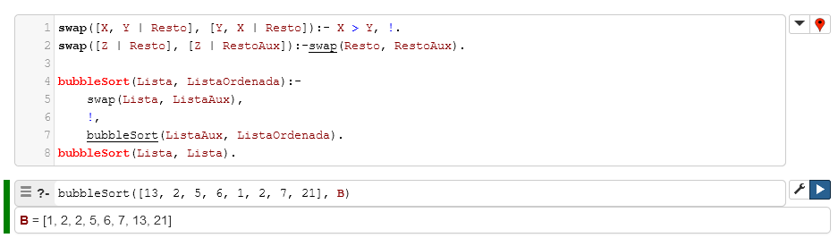
11.9 Ejemplo Doomie de Analizador Sintáctico del Inglés
El modelo del lenguaje inglés consta de siete categorías o tipos de lexema :
- Sustantivo
- Verbo
- Adjetivo
- Adverbio
- Artículo
- Conjunción
- Preposición
La gramática es sensible al contexto en tanto que obliga que haya coherencia cuantitativa entre sustantivos y verbos, así como entre sustantivos y artículos — e.g., a man likes a dog (es coherente) ; a man likes a dogs (no es coherente).
Axiomas
Las reglas sintácticas del inglés están pensadas en términos de los tipos de lexema propios del lenguaje, que en la práctica deben ser reemplazados por lexemas particulares. Por esa razón se construye la estructura axiomática del sistema formal que modela la gramática del inglés con un arbol que progresa desde las categorías más generales hasta los lexemas particulares — en términos formales, se progresa desde los símbolos de la gramática hasta los valores terminales.
En la siguiente celda de código, el conjunto de instancias del predicado isa(X, Y) implementa esta estructura arbórea :
- Primer Nivel:
- word → noun | verb | article
- Segundo Nivel:
- noun → singular_noun | plural_noun
- verb → singular_verb | plural_verb
- article → singular_article | plural_article | neutral_article
- Tercer Nivel:
- singular_noun → man | dog | woman | leg
- plural_noun → men | dogs | women | legs
- singular_verb → bites | likes
- plural_verb → bite | like
- singular_article → a
- neutral_article → the
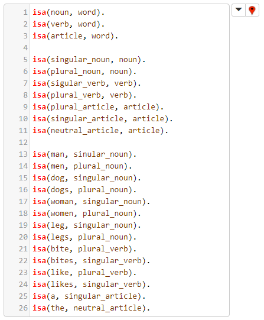
La siguiente celda termina de definir el carácter de los lexemas del lenguaje:
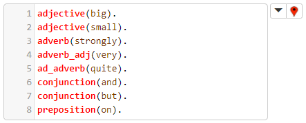
¿Por qué no se les implementó, deberá preguntarse el lector, de manera afín a como se implementó a sus predecesores, los sustantivos, verbos y artículos? Porque, como se verá en breve, mientras que conviene a la implementación del analizador sintáctico abstraer tipos de lexema en ciertos casos, en otros casos es del todo innecesario.
Para el caso de los terminales de la penúltima celda es esencial no solamente poder atribuirles su carácter como sustantivo, verbo o artículo, sino también como singular o plural. En esta implementación se optó, con fines educativos, por implementar dichas atribuciones por medio de la herencia : se entiende que si un nodo padre, en la estructur arbórea antes descrita, posee ciertas propiedades, los nodos que se desprendan de él también las tendrán. Esto es algo del todo innecesario en la consideración de otras clases de lexema, los adjetivos, adverbios, etc. de ahí que no se les implemente con el predicado isa(X, Y), y sí con predicados más simples : al no ser de interés atribuirles más propiedad que la que su mismo predicado les atribuye, tampoco es de interés implementar para ellos ninguna forma de herencia.
Las atribuciones hechas a los terminales de la penúltima celda están implementadas en esta:
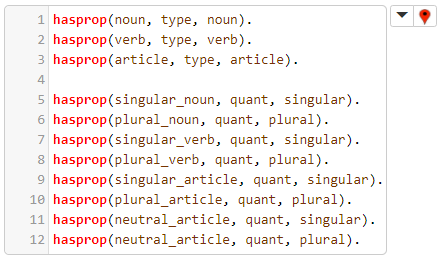
Y la herencia de dichas atribuciones está implementada en esta:
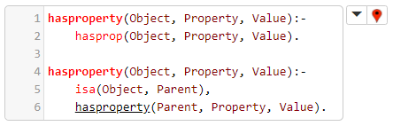
Reglas de Inferencia
La anterior celda de código ya definía ambas cláusulas de la regla hasproperty(Object, Property, Value). En lo que sigue se presentará otras reglas de inferencia, a partir de las que se construirá incrementalmente el analizador sintáctico.
La primera regla, para la verificación de frases nominales, es nounphrase(...), y cuenta con varias cláusulas :
- La primera cláusula estipula que un sustantivo es una frase nominal.
- La segunda cláusula estipula que un artículo seguido por un sustantivo es una frase nominal.
- La tercera cláusula estipula que un sustantivo seguido por un adjetivo es una frase nominal.
- La cuarta cláusula estipula que un artículo, seguido por un adjetivo, seguido por un sustantivo, es una frase nominal.
- La quinta cláusula estipula que un adverbio adjetival, seguido por un adjetivo, seguido por un sustantivo, es una frase nominal.
- La sexta cláusula estipula que un artículo, seguido por un adverbio adjetival, seguido por un adjetivo, seguido por un sustantivo, es una frase nominal.
- La séptima cláusula estipula que una preposición seguida por una frase nominal es una frase nominal.
Nótese que las cláusulas 2, 4 y 6, al contener sustantivos y artículos, obligan que ambos sean singulares o plurales (puesto que ambos deben tener el mismo valor de Number) :
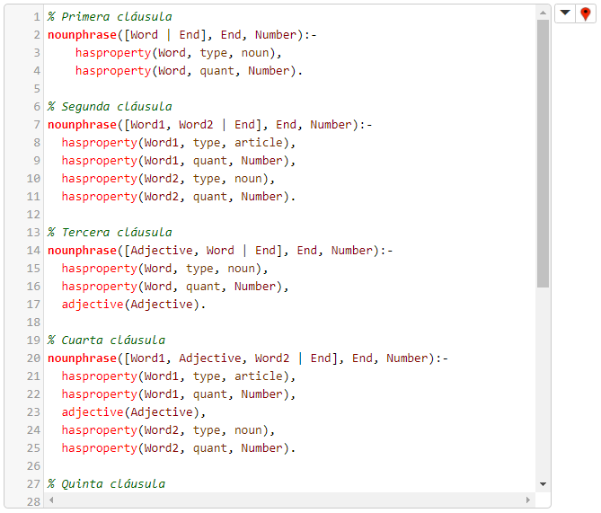

La segunda regla, para la verificación de frases verbales, es verbphrase(...), y cuenta con varias cláusulas:
- La primera cláusula estipula que un verbo es una frase verbal.
- La segunda cláusula estipula que un verbo seguido por una frase nominal es una frase verbal.
- La tercera cláusula estipula que un adverbio seguido por un verbo, seguido por una frase nominal, es una frase verbal.
- La cuarta cláusula estipula que un adverbio seguido por otro adverbio, seguido por un verbo, seguido por una frase nominal, es una frase verbal.
Nótese que, por un lado, si el verbo y la frase nominal que le sigue tienen ambos el mismo número gramatical es irrelevante, por lo que el valor de Number en nounphrase(..., Number) es _, y que, por otro lado, el axioma anteriormente declarado ad_adverb(quite). significa que la palabra inglesa 'quite' es un adverbio que puede modificar a otro adverbio.
El código que implementa esta segunda regla:
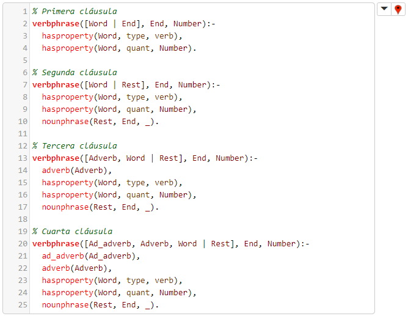
La tercera regla, para la verificación de frases preposicionales, es prepphrase(...), y estipula que una preposición seguida por una frase nominal es una frase preposicional:
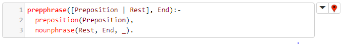
La cuarta regla, para la detección de conectores, es connector(...), y retorna si el primer lexema de una secuencia de lexemas dada es un conector o no:
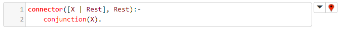
La quinta regla, para la verificación de oraciones, es sentence(...), y tiene varias cláusulas:
- La primera estipula que una frase nominal seguida por una frase verbal es una oración.
- La segunda estipula que una frase nominal seguida por una frase verbal, seguida por una frase preposicional, es una oración.
Nótese que el número gramatical de la frase nominal debe ser el mismo de la frase verbal que la sigue:
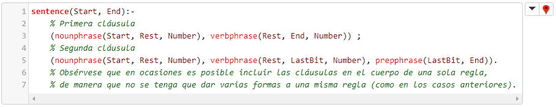
La sexta y última regla, para la verificación de articulaciones (las estructuras sintácticas más generales, análogas a lo que sería el programa si se tratara d eun lenguaje de programación), es utterance(...), y tiene varias cláusulas:
- La primera estipula que una oración es una articulación.
- La segunda estipula que una oración seguida por un conector, seguido por una frase preposicional, es una articulación.
- La tercera estipula que una oración seguida por un conector, seguido por una articulación, es una articulación.
El código que implementa la regla:
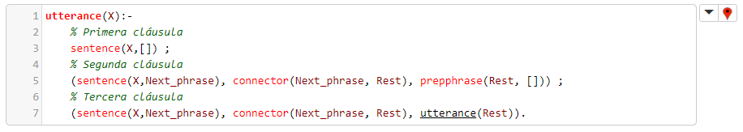
Una anotación final es pertinente: la variable Rest actúa como una variable de retorno, y adquiere su valor cuando, en la cabecera de distintas reglas de inferencia, se designa la cola de una lista como Rest (véase las reglas nounphrase(...), por ejemplo). En ocasiones la variable End actúa de forma similar, solo que mientras que Rest denota lo que falta por procesar de la lista de lexemas, End denota lo último que se va a procesar. LastBit en la regla de inferencia sentence(...) representa lo que sería un punto intermedio entre Rest y End, y Next_phrase en la regla de inferencia utterance(...) representa lo que sería Rest antes de Rest mismo.
Notebook del Ejemplo Doomie de Analizador Sintáctico del Inglés implementado.
11.10 Ejemplo Sistema Experto Animales
En este ejemplo se lleva a cabo la implementación de un Sistema Experto en prolog que permite identificar un animal dentro de un conjunto de animales definidos por características.
Un sistema experto es un sistema computacional que emula la capacidad de tomar decisiones de un humano experto. Está compuesto por una base de conocimiento y un motor de inferencia, el cual recibe las características de una entidad o un problema. Comparando el conocimiento previo existente en la base de conocimientos con las características de la entidad es posible identificarlo y, en consecuencia, producir un diagnóstico o deducción.
Las siguientes son las partes del sistema:
Primero se define la regla, con la cual se inicia el proceso. Esta regla llama a las hipótesis, luego realiza el proceso para evaluarlas y, finalmente, escribe en consola la solución final.

Se define una lista con las hipótesis que van a ser puestas a prueba. Estas hipótesis son excluyentes entre ellas (por ejemplo, el animal no puede ser un tigre y una jirafa al mismo tiempo).

Luego, se identifican las características por las cuales se puede diferenciar cada animal.

Se puede ver que cada una de ellas llama a "verificar"; de esta manera, se le preguntará al usuario si el animal que busca tiene una característica en particular. Con esta información se alimenta la base de conocimiento.

La regla auxiliar "ask" sirve para recibir los datos del usuario: esta hace uso de la regla "assert" que trae prolog por defecto, la cual permite añadir nuevos hechos a la base de conocimiento del sistema.

Ejemplos de la salida del sistema
Resultado de búsqueda de jaguar:

Resultado de búsqueda de zebra:

12. Aplicaciones

Una de las aplicaciones más importantes por las que Prolog fue reconocido en el mundo, fue por su participación en la quinta generación de computadores.
Este proyecto tiene como objetivo principal implementar la inteligencia artificial (IA) mediante software o hardware escrito en Prolog, para ejecutar la traducción automática de un lenguaje a otro, es decir: de español a inglés o de inglés a japonés entre otros.
Aunque el proyecto no tuvo un resultado satisfactorio, fue un gran avance para lo que hoy en día conocemos como las traducciones automáticas, principalmente en páginas web.
13. Desventajas / Ventajas
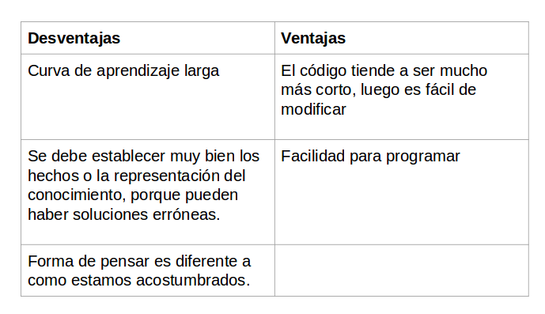
Tutorial sobre conceptos básicos. Enlace de descarga.
Tutorial + IDE Online . Ide Online.
Tutorial de Prolog en Notebook de SWISH
Tutorial de Prolog 2021-I, desarrollado en SWISH.
Tutorial de Prolog 2021-II, desarrollado en SWISH.
Esperamos que el tutorial haya sido de su agrado. Los ejercicios trabajados pueden encontrarlos en este notebook
Este tutorial fue desarrollado por Mónica Pineda, Jorge Bonilla y Diego Poveda.
Colaboradores : Jaime Andres Vargas y Jonathan Alberto Ortiz
Santiago Carvajal Castañeda y Mario Andrés Moreno
Julián Esteban Salomón y Cristian David González
Cristian Laiton y David Hormaza.
Luis Castro y Wilson Piravaguen.
Andrés Fernando Román Arévalo.
Alci René Ramírez Soto.
Jonathan López Castellanos, Victor Barragán Páez y Wilson Arévalo Rodríguez.
María Fernanda Carbonell Santos, Juan David González Muñoz, Ivan Alejandro Cruz Tole y Yuli Beltran Rozo
Julián Andrés Pereira, Jefferson Daniel Castro, Nicolás Andrés Caicedo, Gabriel Enrique Ramirez
Andrea Katerine Calderón, Angela Maria Cardenas, Valentina Colmenares, Luis Alfonso Díaz